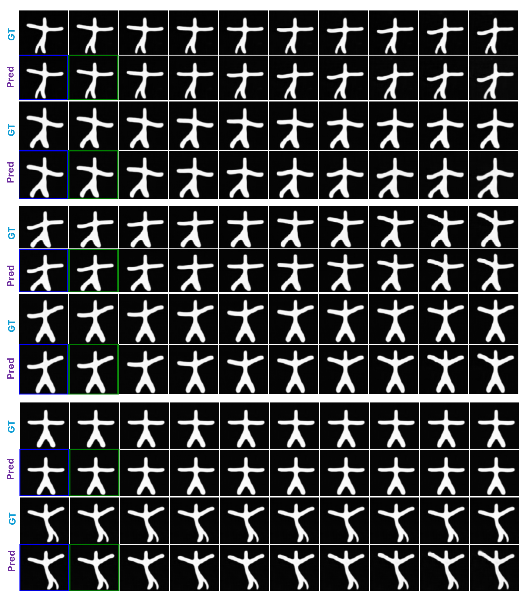
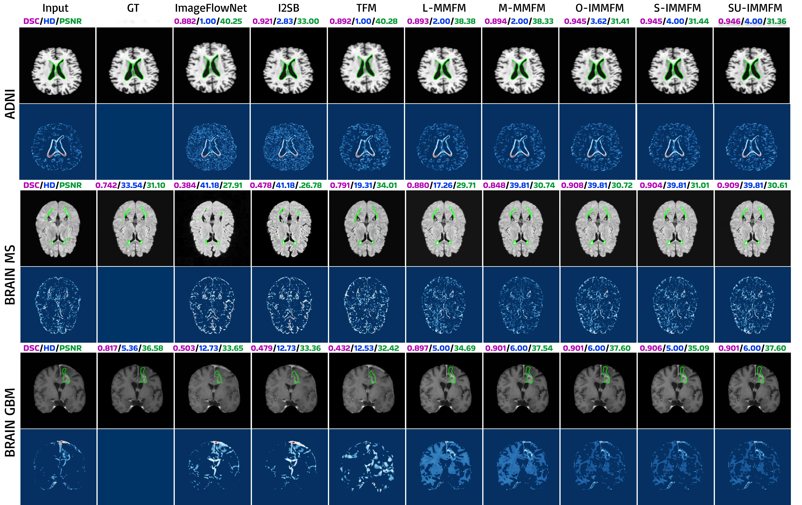
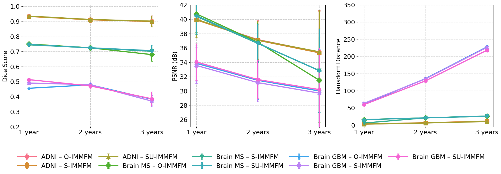

Figure 1 · Problem and model overview
Sparse longitudinal observations, uncertainty handling, and IMMFM components in one full-width view.
The story in one paragraph
Longitudinal data is messy: scans are irregular, trajectories are incomplete, and uncertainty is real. Instead of stitching together only pairwise transitions, IMMFM learns a continuous trajectory that stays consistent with all available time points. A smooth piecewise-quadratic path captures trend, while a learned diffusion term captures uncertainty. Together, they produce trajectories that are both plausible and clinically useful.
Core idea: separate smooth progression from stochastic variation, then learn both jointly.
Figure 1 · The central idea (full-width highlight)
This is the key figure of the project. It introduces the problem setting and how IMMFM connects sparse observations, interpolation, and stochastic trajectory modeling in one coherent framework.
What the generated trajectories look like
Before diving into more plots, it helps to watch the model. The examples below show subject-specific trajectory behavior on synthetic motion and ADNI brain progression.
Starmen · Hand-going-down
Conditioned generation tracks the expected motion direction.
Starmen · Hand-going-up
The learned dynamics preserve class-specific temporal behavior.
ADNI · Subject 417
A plausible long-range trajectory from sparse clinical observations.
ADNI · Subject 451
Forecast behavior remains stable over longer horizons.
From mechanism to evidence
Once the modeling story is clear, the remaining figures show why the method works in practice: better trajectory recovery, strong qualitative forecasts, and more clinically meaningful downstream signals.
- Multi-marginal path design avoids abrupt segment transitions.
- Joint drift + diffusion learning captures uncertainty instead of ignoring it.
- Forecasted trajectories improve downstream AD-vs-CN classification over time.
Figure 2 · Synthetic trajectory recovery
IMMFM better follows complex S-shaped and σ-shaped dynamics.

Figure 3 · Conditional Starmen trajectories
Trajectory class follows the conditioning signal.

Figure 4 · Real-world qualitative forecasts
Forecast fidelity and localized error behavior in neuroimaging data.
Figure 5 · Disease progression and downstream utility
Forecasted trajectories connect directly to clinically relevant biomarkers and diagnosis gains.

Figure 6 · Supplementary analysis
Additional evidence for robustness across horizons and cohorts.